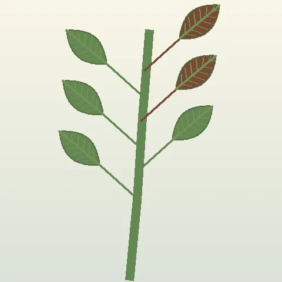

Branch dieback
Individual branches dying back
This is one possible explanation. Compare the signs below with those on your plant.

What to look for
Follow the dead branch back toward live growth and inspect the boundary for breaks, sunken bark or a tight tie.
Possible causes and next steps
A damaged branch or localized disease can cause dieback. Loosen tight ties, mark the boundary and photograph any advancing damage.